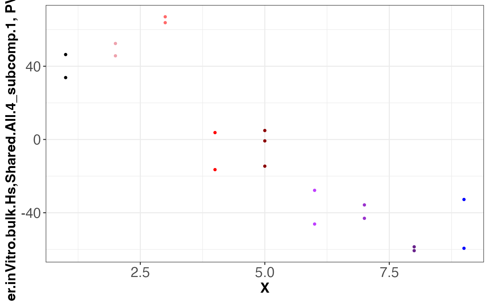
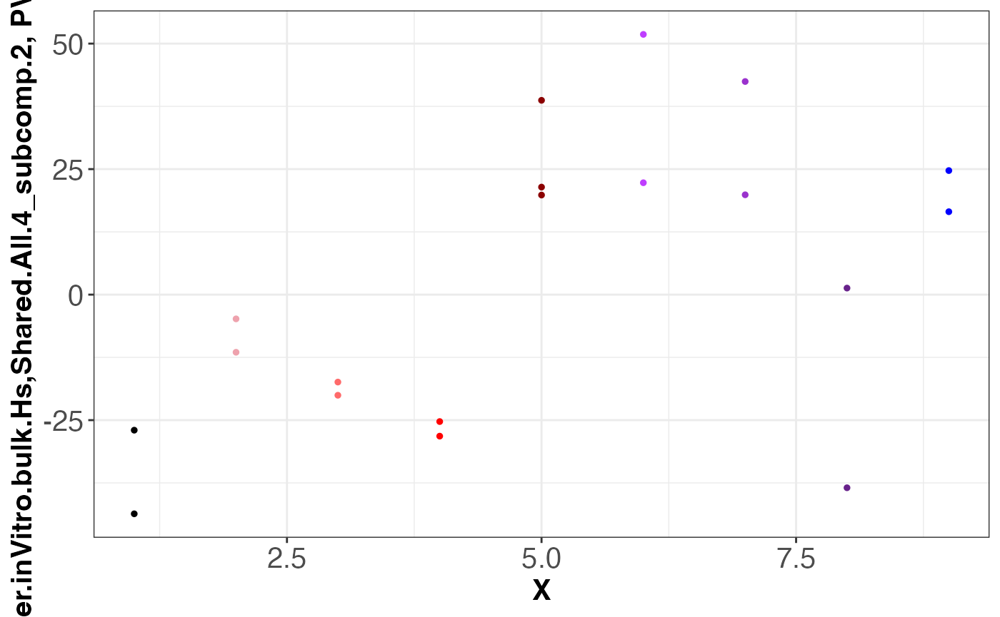
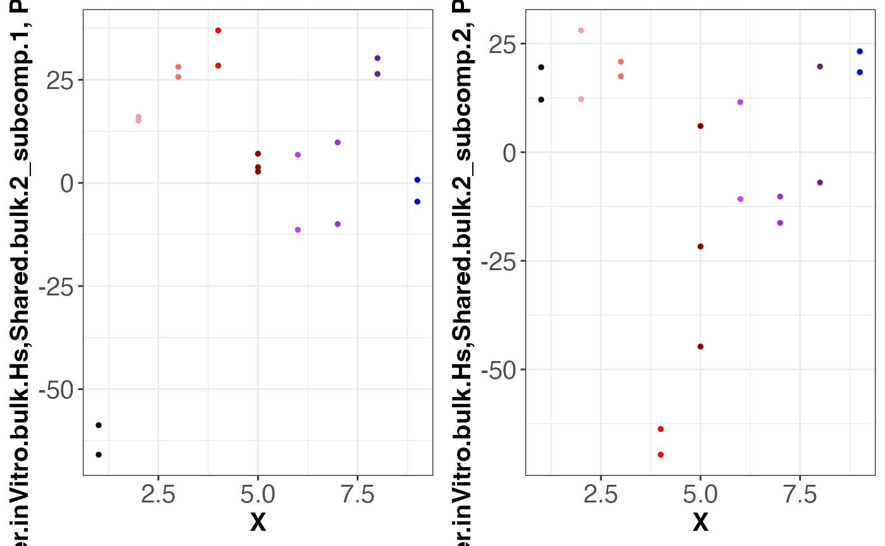
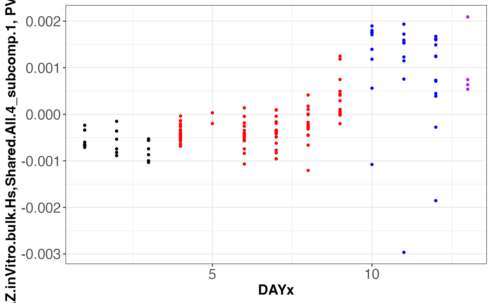
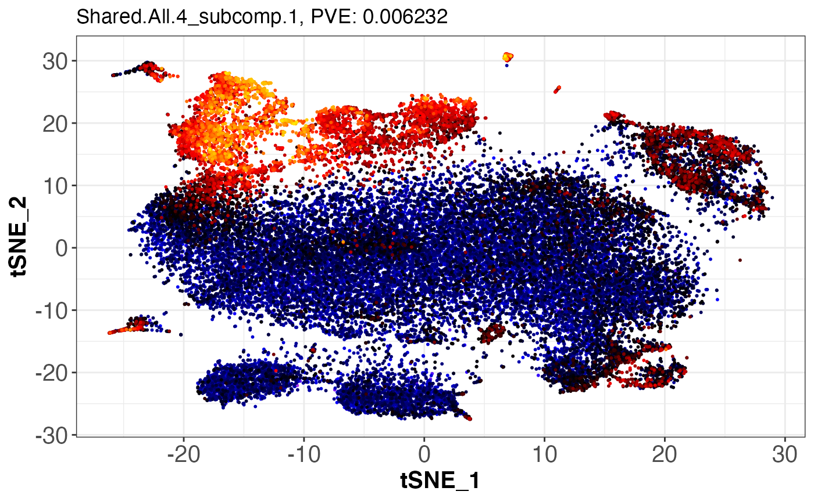
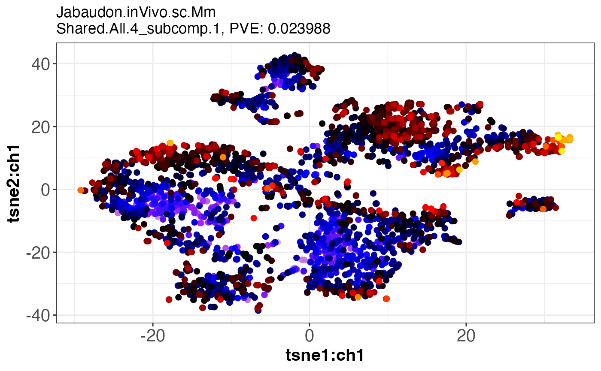

vignettes/StructralJointDecomposition.Rmd
StructralJointDecomposition.RmdWe are using a list of neurogenesis datasets of both human and mouse model from different studies to demonstrate the use of SJD package. Here we have a list of datasets NeuroGenesis4, and one dataframe NeuroGenesis.info containing meta informationtot helps visualize the results. Users are suggested to make the dataframe including information prior to visualization.
SJD packageTo install this package in R, run the following commands:
library(devtools)
install_github("CHuanSite/SJD")SJD packageThe whole structured NeuroGenesis4 and its meta information NeuroGenesis.info are deposited to googledrive and the downsized subsets are built in the SJD package. Please follow the below commands to download the real data and info For users who wants to save time by using the subset data, please skip downloading from google drive and follow the commands below.
We download the full data sets from the google drive, and load it into R
install.packages("googledrive")
#> Installing package into '/private/var/folders/hn/15_w90p96zn9px58h76x8sfr0000gn/T/RtmpbcRhI6/temp_libpath177ea46af50cd'
#> (as 'lib' is unspecified)
#>
#> The downloaded binary packages are in
#> /var/folders/hn/15_w90p96zn9px58h76x8sfr0000gn/T//RtmpQGXeyT/downloaded_packages
library(googledrive)
## Download NeuroGenesis4
drive_download(file = "https://drive.google.com/u/0/uc?export=download&id=1jf4f_dxps47yT89m8Tkpviyci_XoOtGk", path = "./NeuroGenesis4.RData", overwrite = TRUE)
#> ! Using an auto-discovered, cached token.
#> To suppress this message, modify your code or options to clearly consent to
#> the use of a cached token.
#> See gargle's "Non-interactive auth" vignette for more details:
#> <https://gargle.r-lib.org/articles/non-interactive-auth.html>
#> ℹ The googledrive package is using a cached token for 'hzchenhuan@gmail.com'.
#> Auto-refreshing stale OAuth token.
#> File downloaded:
#> • 'NeuroGenesis4_full_data.RData' <id: 1jf4f_dxps47yT89m8Tkpviyci_XoOtGk>
#> Saved locally as:
#> • './NeuroGenesis4.RData'
## Download NeruGenesis4.info
drive_download(file = "https://drive.google.com/file/d/1aGYAxZDYJKOLLO1LmFk9vPYUmtmS1TjZ/view?usp=sharing", path = "./NeuroGenesis4.info.RData", overwrite = TRUE)
#> File downloaded:
#> • 'NeuroGenesis4_full_info.RData' <id: 1aGYAxZDYJKOLLO1LmFk9vPYUmtmS1TjZ>
#> Saved locally as:
#> • './NeuroGenesis4.info.RData'
load(file = "./NeuroGenesis4.RData")
load(file = "./NeuroGenesis4.info.RData")This block of codes containing the small sampled data, which is faster to compute than the full scale data,
# data("NeuroGenesis4", package = "SJD")
# data("NeuroGenesis4.info", package = "SJD")
# str(NeuroGenesis4)Here we input the list of datasets (expression matrices) and wrap them to be ready for SJD analysis. sjdWrap identifies the shared genes among all datasets regardless of species and output a new list of datasets with uniformed gene names
SJDdataIN = sjdWrap(
data.list = NeuroGenesis4,
species.vector = c("human", "human", "human", "mouse"),
geneType.vector = c("symbol","ensembl","symbol","symbol"),
geneType.out = "symbol",
species.out = "human"
)
#> Using biomaRt to connect gene IDs across 4 datasets:
#> Getting biomaRt IDs for dataset 1
#> You have input 23368 genes
#> We found 22403 matches
#> 2654 of those are duplicates and only keeping the 1st of each
#> Getting biomaRt IDs for dataset 2
#> You have input 63677 genes
#> We found 54480 matches
#> 16878 of those are duplicates and only keeping the 1st of each
#> Getting biomaRt IDs for dataset 3
#> You have input 35543 genes
#> We found 25597 matches
#> 2271 of those are duplicates and only keeping the 1st of each
#> Getting biomaRt IDs for dataset 4
#> Ensembl site unresponsive, trying asia mirror
#> You have input 16441 genes
#> We found 12409 matches
#> 621 of those are duplicates and only keeping the 1st of each
#> constructed 4 tables of cross-species matching genes
#> we found 10631 shared genes in 4 datasets
#> new data list of 4 datasets constructedAfter the transformation and alignment among the data sets, the next step is to apply the decomposition method, we give examples on different methods to illustrate the process
grp = list(
Shared.All.4 = c(1 : 4),
Shared.bulk.2 = c(1,2),
Shared.sc.2 = c(3, 4),
Hs.Meisnr.1 = c(1),
Hs.AZ.1 = c(2),
Gesch.1 = c(3),
Telley.1 = c(4))
dims = c(2, 2, 2, 2, 2, 2, 2) # must have same length as "grp"
# sep
# sepPCA.out = sepPCA(SJDdataIN, dims)
# sepICA.out = sepICA(SJDdataIN, dims)
# sepNMF.out = sepNMF(SJDdataIN, dims)
# concat
# concatPCA.out = concatPCA(SJDdataIN, grp, dims)
# concatICA.out = concatICA(SJDdataIN, grp, dims)
# concatNMF.out = concatNMF(SJDdataIN, grp, dims)
# joint
# jointPCA.out = jointPCA(SJDdataIN, grp, dims)
# jointICA.out = jointICA(SJDdataIN, grp, dims)
# jointNMF.out = jointNMF(SJDdataIN, grp, dims)
# sequential
twoStageLCA.out = twoStageLCA(dataset = SJDdataIN, group = grp, comp_num = dims)
# twoStageiLCA.out = twoStageiLCA(dataset = SJDdataIN, group = grp, comp_num = dims)
library(ggplot2)
library(gridExtra)
#>
#> Attaching package: 'gridExtra'
#> The following object is masked from 'package:Biobase':
#>
#> combine
#> The following object is masked from 'package:BiocGenerics':
#>
#> combineHere we need to call the SJDScorePlotter function to generate the SJDScorePlotter.obj, a list of ggplot objects that can be used
SampleMetaNamesTable = data.frame(
row.names = names(NeuroGenesis4),
Type = c('Yaxis','Yaxis','2Dscatter','2Dscatter'),
XaxisColumn = c("X","DAYx","tSNE_1","tsne1:ch1"),
YaxisColumn = c("PJDscores","PJDscores","tSNE_2","tsne2:ch1"),
COLaxisColumn = c("color","colorBYlabelsX","PJDscores","PJDscores"),
PCHColumn = c("","","",""),
cexx=c(1,1,2,2)
)
SJDScorePlotter.obj = SJDScorePlotter(
SJDalg = "twoStageLCA",
scores = twoStageLCA.out$score_list,
lbb = "NeuroGenesis4.p2",
info = NeuroGenesis4.info,
SampleMetaNamesTable = SampleMetaNamesTable
)
#> [1] "**********************************************************"
#> [1] "plotting scores for twoStageLCA anaysis."
#> [1] "*******************************"
#> [1] "dataset: Meissner.inVitro.bulk.Hs"
#> [1] "grouping: Shared.All.4"
#> [1] 1
#> [1] 2
#> [1] "grouping: Shared.bulk.2"
#> [1] 1
#> [1] 2
#> [1] "grouping: Shared.sc.2"
#> [1] "No SJD scores for grouping : Shared.sc.2, moving to the next SJD output for Meissner.inVitro.bulk.Hs"
#> [1] "grouping: Hs.Meisnr.1"
#> [1] 1
#> [1] 2
#> [1] "grouping: Hs.AZ.1"
#> [1] "No SJD scores for grouping : Hs.AZ.1, moving to the next SJD output for Meissner.inVitro.bulk.Hs"
#> [1] "grouping: Gesch.1"
#> [1] "No SJD scores for grouping : Gesch.1, moving to the next SJD output for Meissner.inVitro.bulk.Hs"
#> [1] "grouping: Telley.1"
#> [1] "No SJD scores for grouping : Telley.1, moving to the next SJD output for Meissner.inVitro.bulk.Hs"
#> [1] "*******************************"
#> [1] "dataset: LIBD.AZ.inVitro.bulk.Hs"
#> [1] "grouping: Shared.All.4"
#> [1] 1
#> [1] 2
#> [1] "grouping: Shared.bulk.2"
#> [1] 1
#> [1] 2
#> [1] "grouping: Shared.sc.2"
#> [1] "No SJD scores for grouping : Shared.sc.2, moving to the next SJD output for LIBD.AZ.inVitro.bulk.Hs"
#> [1] "grouping: Hs.Meisnr.1"
#> [1] "No SJD scores for grouping : Hs.Meisnr.1, moving to the next SJD output for LIBD.AZ.inVitro.bulk.Hs"
#> [1] "grouping: Hs.AZ.1"
#> [1] 1
#> [1] 2
#> [1] "grouping: Gesch.1"
#> [1] "No SJD scores for grouping : Gesch.1, moving to the next SJD output for LIBD.AZ.inVitro.bulk.Hs"
#> [1] "grouping: Telley.1"
#> [1] "No SJD scores for grouping : Telley.1, moving to the next SJD output for LIBD.AZ.inVitro.bulk.Hs"
#> [1] "*******************************"
#> [1] "dataset: Geschwind.inVivo.sc.Hs"
#> [1] "grouping: Shared.All.4"
#> [1] 1
#> [1] 2
#> [1] "grouping: Shared.bulk.2"
#> [1] "No SJD scores for grouping : Shared.bulk.2, moving to the next SJD output for Geschwind.inVivo.sc.Hs"
#> [1] "grouping: Shared.sc.2"
#> [1] 1
#> [1] 2
#> [1] "grouping: Hs.Meisnr.1"
#> [1] "No SJD scores for grouping : Hs.Meisnr.1, moving to the next SJD output for Geschwind.inVivo.sc.Hs"
#> [1] "grouping: Hs.AZ.1"
#> [1] "No SJD scores for grouping : Hs.AZ.1, moving to the next SJD output for Geschwind.inVivo.sc.Hs"
#> [1] "grouping: Gesch.1"
#> [1] 1
#> [1] 2
#> [1] "grouping: Telley.1"
#> [1] "No SJD scores for grouping : Telley.1, moving to the next SJD output for Geschwind.inVivo.sc.Hs"
#> [1] "*******************************"
#> [1] "dataset: Jabaudon.inVivo.sc.Mm"
#> [1] "grouping: Shared.All.4"
#> [1] 1
#> [1] 2
#> [1] "grouping: Shared.bulk.2"
#> [1] "No SJD scores for grouping : Shared.bulk.2, moving to the next SJD output for Jabaudon.inVivo.sc.Mm"
#> [1] "grouping: Shared.sc.2"
#> [1] 1
#> [1] 2
#> [1] "grouping: Hs.Meisnr.1"
#> [1] "No SJD scores for grouping : Hs.Meisnr.1, moving to the next SJD output for Jabaudon.inVivo.sc.Mm"
#> [1] "grouping: Hs.AZ.1"
#> [1] "No SJD scores for grouping : Hs.AZ.1, moving to the next SJD output for Jabaudon.inVivo.sc.Mm"
#> [1] "grouping: Gesch.1"
#> [1] "No SJD scores for grouping : Gesch.1, moving to the next SJD output for Jabaudon.inVivo.sc.Mm"
#> [1] "grouping: Telley.1"
#> [1] 1
#> [1] 2
print(names(SJDScorePlotter.obj))
#> [1] "SJDout_NeuroGenesis4.p2.SJDalg_twoStageLCA.grp_Shared.All.4.data_Meissner.inVitro.bulk.Hs.comp1of2"
#> [2] "SJDout_NeuroGenesis4.p2.SJDalg_twoStageLCA.grp_Shared.All.4.data_Meissner.inVitro.bulk.Hs.comp2of2"
#> [3] "SJDout_NeuroGenesis4.p2.SJDalg_twoStageLCA.grp_Shared.bulk.2.data_Meissner.inVitro.bulk.Hs.comp1of2"
#> [4] "SJDout_NeuroGenesis4.p2.SJDalg_twoStageLCA.grp_Shared.bulk.2.data_Meissner.inVitro.bulk.Hs.comp2of2"
#> [5] "SJDout_NeuroGenesis4.p2.SJDalg_twoStageLCA.grp_Hs.Meisnr.1.data_Meissner.inVitro.bulk.Hs.comp1of2"
#> [6] "SJDout_NeuroGenesis4.p2.SJDalg_twoStageLCA.grp_Hs.Meisnr.1.data_Meissner.inVitro.bulk.Hs.comp2of2"
#> [7] "SJDout_NeuroGenesis4.p2.SJDalg_twoStageLCA.grp_Shared.All.4.data_LIBD.AZ.inVitro.bulk.Hs.comp1of2"
#> [8] "SJDout_NeuroGenesis4.p2.SJDalg_twoStageLCA.grp_Shared.All.4.data_LIBD.AZ.inVitro.bulk.Hs.comp2of2"
#> [9] "SJDout_NeuroGenesis4.p2.SJDalg_twoStageLCA.grp_Shared.bulk.2.data_LIBD.AZ.inVitro.bulk.Hs.comp1of2"
#> [10] "SJDout_NeuroGenesis4.p2.SJDalg_twoStageLCA.grp_Shared.bulk.2.data_LIBD.AZ.inVitro.bulk.Hs.comp2of2"
#> [11] "SJDout_NeuroGenesis4.p2.SJDalg_twoStageLCA.grp_Hs.AZ.1.data_LIBD.AZ.inVitro.bulk.Hs.comp1of2"
#> [12] "SJDout_NeuroGenesis4.p2.SJDalg_twoStageLCA.grp_Hs.AZ.1.data_LIBD.AZ.inVitro.bulk.Hs.comp2of2"
#> [13] "SJDout_NeuroGenesis4.p2.SJDalg_twoStageLCA.grp_Shared.All.4.data_Geschwind.inVivo.sc.Hs.comp1of2"
#> [14] "SJDout_NeuroGenesis4.p2.SJDalg_twoStageLCA.grp_Shared.All.4.data_Geschwind.inVivo.sc.Hs.comp2of2"
#> [15] "SJDout_NeuroGenesis4.p2.SJDalg_twoStageLCA.grp_Shared.sc.2.data_Geschwind.inVivo.sc.Hs.comp1of2"
#> [16] "SJDout_NeuroGenesis4.p2.SJDalg_twoStageLCA.grp_Shared.sc.2.data_Geschwind.inVivo.sc.Hs.comp2of2"
#> [17] "SJDout_NeuroGenesis4.p2.SJDalg_twoStageLCA.grp_Gesch.1.data_Geschwind.inVivo.sc.Hs.comp1of2"
#> [18] "SJDout_NeuroGenesis4.p2.SJDalg_twoStageLCA.grp_Gesch.1.data_Geschwind.inVivo.sc.Hs.comp2of2"
#> [19] "SJDout_NeuroGenesis4.p2.SJDalg_twoStageLCA.grp_Shared.All.4.data_Jabaudon.inVivo.sc.Mm.comp1of2"
#> [20] "SJDout_NeuroGenesis4.p2.SJDalg_twoStageLCA.grp_Shared.All.4.data_Jabaudon.inVivo.sc.Mm.comp2of2"
#> [21] "SJDout_NeuroGenesis4.p2.SJDalg_twoStageLCA.grp_Shared.sc.2.data_Jabaudon.inVivo.sc.Mm.comp1of2"
#> [22] "SJDout_NeuroGenesis4.p2.SJDalg_twoStageLCA.grp_Shared.sc.2.data_Jabaudon.inVivo.sc.Mm.comp2of2"
#> [23] "SJDout_NeuroGenesis4.p2.SJDalg_twoStageLCA.grp_Telley.1.data_Jabaudon.inVivo.sc.Mm.comp1of2"
#> [24] "SJDout_NeuroGenesis4.p2.SJDalg_twoStageLCA.grp_Telley.1.data_Jabaudon.inVivo.sc.Mm.comp2of2"Save the whole list to a .RData file
# save(SJDScorePlotter.obj, file = "./SJDScorePlotter.obj.RData")
assemble.byDataset.obj = assemble.byDataset(SJDScorePlotter.obj = SJDScorePlotter.obj, dataset_name = "Meissner.inVitro.bulk.Hs", SJD_algorithm = "twoStageLCA", group = NA)
print(names(assemble.byDataset.obj))
#> [1] "SJDout_NeuroGenesis4.p2.SJDalg_twoStageLCA.grp_Shared.All.4.data_Meissner.inVitro.bulk.Hs.comp1of2"
#> [2] "SJDout_NeuroGenesis4.p2.SJDalg_twoStageLCA.grp_Shared.All.4.data_Meissner.inVitro.bulk.Hs.comp2of2"
#> [3] "SJDout_NeuroGenesis4.p2.SJDalg_twoStageLCA.grp_Shared.bulk.2.data_Meissner.inVitro.bulk.Hs.comp1of2"
#> [4] "SJDout_NeuroGenesis4.p2.SJDalg_twoStageLCA.grp_Shared.bulk.2.data_Meissner.inVitro.bulk.Hs.comp2of2"
#> [5] "SJDout_NeuroGenesis4.p2.SJDalg_twoStageLCA.grp_Hs.Meisnr.1.data_Meissner.inVitro.bulk.Hs.comp1of2"
#> [6] "SJDout_NeuroGenesis4.p2.SJDalg_twoStageLCA.grp_Hs.Meisnr.1.data_Meissner.inVitro.bulk.Hs.comp2of2"Plot all images corresponding from the assemble.byDataset.obj. We can construct them into a whole big image through the grid.arrange from the grid.Extra package.
assemble.byDataset.obj[[1]]
assemble.byDataset.obj[[2]]
g = grid.arrange(
assemble.byDataset.obj[[3]],
assemble.byDataset.obj[[4]],
nrow = 1, ncol = 2
)
assemble.byComponent.obj = assemblePNG.byComponent(SJDScorePlotter.obj = SJDScorePlotter.obj, component = c(1, 2), SJD_algorithm = "twoStageLCA", group = 'Shared.All.4')
print(names(assemble.byComponent.obj))
#> [1] "SJDout_NeuroGenesis4.p2.SJDalg_twoStageLCA.grp_Shared.All.4.data_Meissner.inVitro.bulk.Hs.comp1of2"
#> [2] "SJDout_NeuroGenesis4.p2.SJDalg_twoStageLCA.grp_Shared.All.4.data_LIBD.AZ.inVitro.bulk.Hs.comp1of2"
#> [3] "SJDout_NeuroGenesis4.p2.SJDalg_twoStageLCA.grp_Shared.All.4.data_Geschwind.inVivo.sc.Hs.comp1of2"
#> [4] "SJDout_NeuroGenesis4.p2.SJDalg_twoStageLCA.grp_Shared.All.4.data_Jabaudon.inVivo.sc.Mm.comp1of2"
#> [5] "SJDout_NeuroGenesis4.p2.SJDalg_twoStageLCA.grp_Shared.All.4.data_Meissner.inVitro.bulk.Hs.comp2of2"
#> [6] "SJDout_NeuroGenesis4.p2.SJDalg_twoStageLCA.grp_Shared.All.4.data_LIBD.AZ.inVitro.bulk.Hs.comp2of2"
#> [7] "SJDout_NeuroGenesis4.p2.SJDalg_twoStageLCA.grp_Shared.All.4.data_Geschwind.inVivo.sc.Hs.comp2of2"
#> [8] "SJDout_NeuroGenesis4.p2.SJDalg_twoStageLCA.grp_Shared.All.4.data_Jabaudon.inVivo.sc.Mm.comp2of2"
assemble.byComponent.obj[[1]]
assemble.byComponent.obj[[2]]
assemble.byComponent.obj[[3]]
assemble.byComponent.obj[[4]]